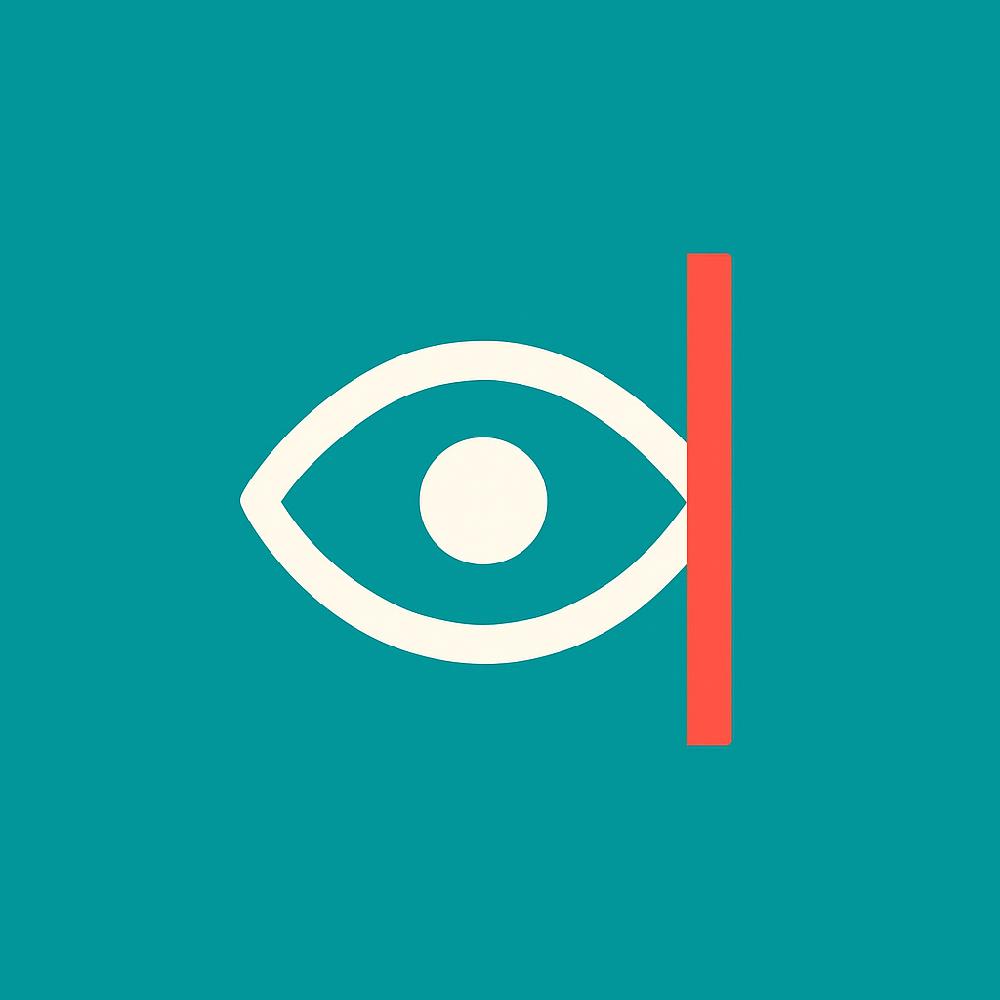

Diplopia Guide is an educational tool designed to assist students and healthcare professionals in understanding and analyzing patterns of double vision. It provides interactive simulations and guided tests to explore common causes of diplopia.